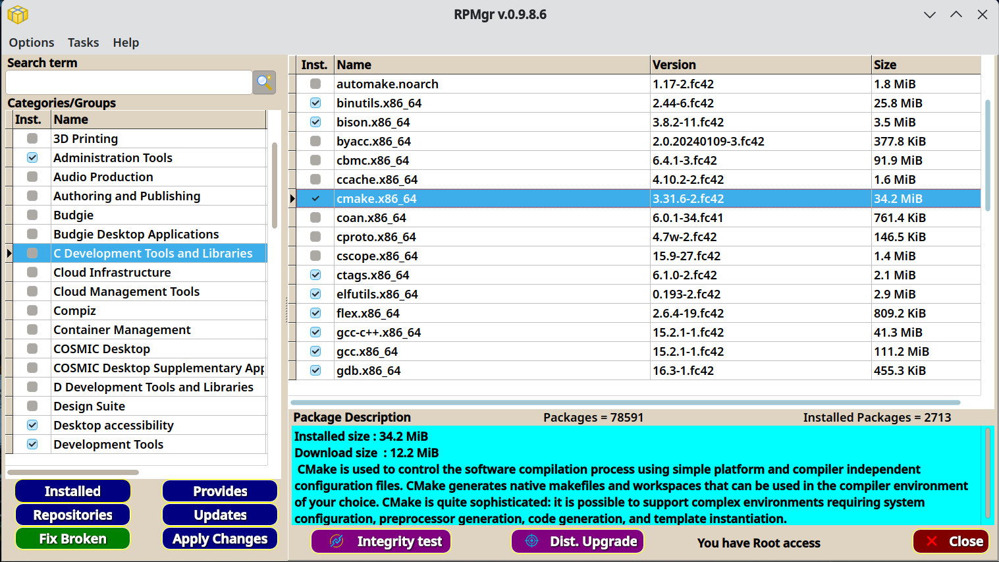
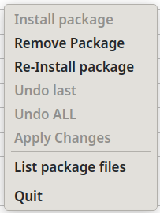
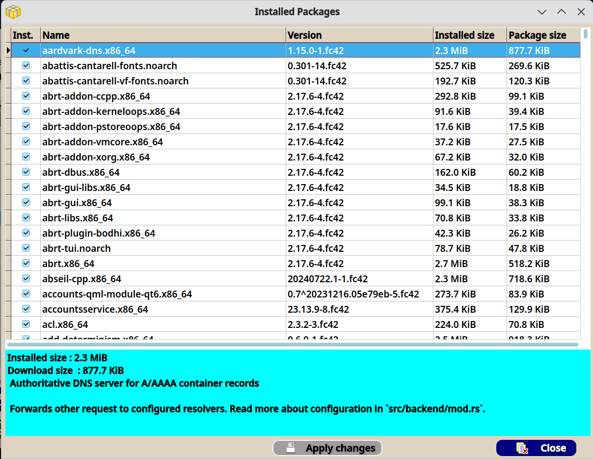
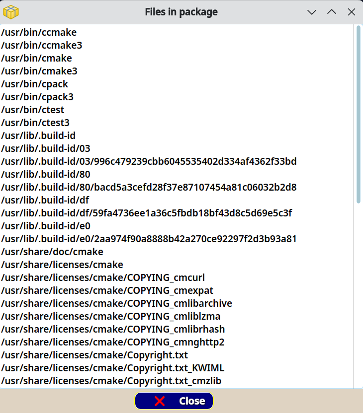

RPMgr 0.9.8.6-Beta
RPMgr (RPM Manager) is a graphical interface
for the RPM and DNF5 packages on Fedora 41 or higher. It is
designed to duplicate the functionality and ease of use of the
Debian Synaptic package closely. It is not a clone of Synaptic,
but is supposed to be Synaptic-like in it's look and feel.
RPMgr is a work in progress and is now in wide beta release. This
is an update to show where the software stands today. Below are
current screen shots of the completed dialogs and functions so
far. I will keep this page updated to reflect the changes. If you
are interested in beta testing RPMgr, please contact me at jem@mlsoft.org.
Source code is available to beta testers, but be aware that RPMgr
is written entirely in object pascal. The source package comes
with the information needed to compile the source. If you have
experience in object pascal and wish to contribute to this
project, please contact me at the email above. A GIT repository
will be available when the package is released. For now I ask that
source not be distributed.
RPMgr is nearing its initial release goal, and has now been
packaged in both binary and source RPM packages.
The main Missing Link
Software website no longer exists since my retirement. Going
to www.mlsoft.org just shows a humorous message now, and only
exists to serve files and some html pages like this.
Login
RPMgr requires a valid sudo user login. This is a 3 login chances
system before the program will halt. Clicking the Cancel button
will also halt the program. Authentication is only done when the
program opens. No login information is stored by RPMgr.
Configuration
The user can change the looks of RPMgr to their liking. RPMgr uses
the QT widget set for a better look and feel to the components.
The user can also choose between offline updates and standard real
time updates. If real time is chosen (unchecking the Offline
option), then a reboot notice is only shown if system files are
affected by the update.
Main screen display

If updates are available, you will see a message
when RPMgr is run, and the Updates button will be red instead of
navy.
Group window popup menu
Package window popup menu

Installed Packages

Package contents

Search results

This is the result of a search for "gcc"
Updates dialog
After Update
Manage Repositories
RPMgr can add, remove, enable, and disable repositories.
Selecting Actions
Marking packages for various actions (install, remove, or
reinstall)
Applying Actions
RPMgr uses a freeform style of marking and applying selected
changes so that installing, removing and reinstalling packages can
be done in one session.
Current Status
The above examples are working in the current version (0.9.8.6).
The software has been through our normal beta testing channels and
is now in wide beta testing. RPMgr is written in Object Pascal.
This is because I am not good with C++ or Rust, and I am not
nearly as comfortable in C as I am in FPC and Lazarus. Questions
or comments are always welcome at the email link above.
--- Jem